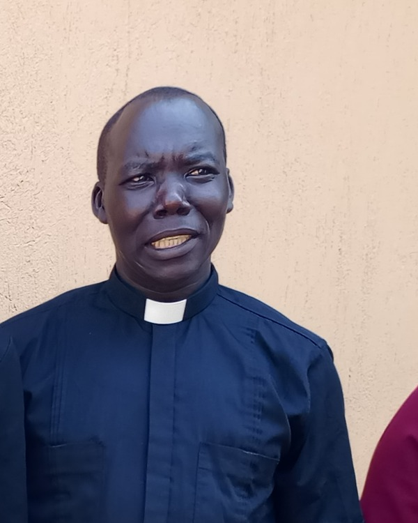
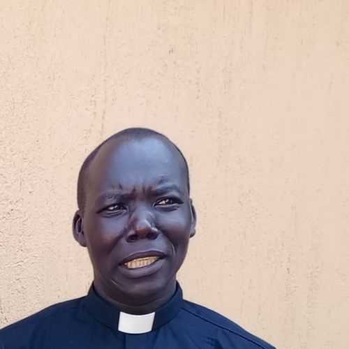
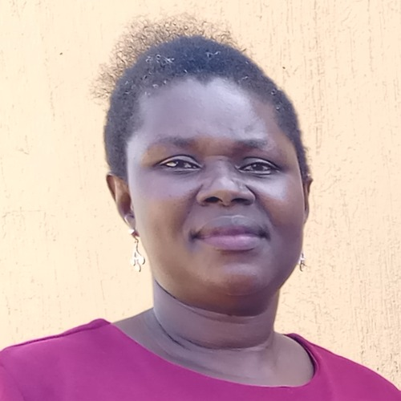
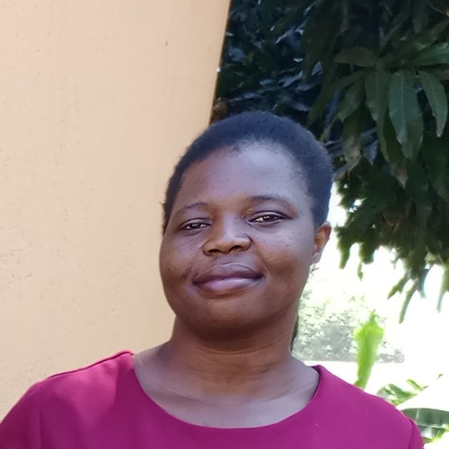
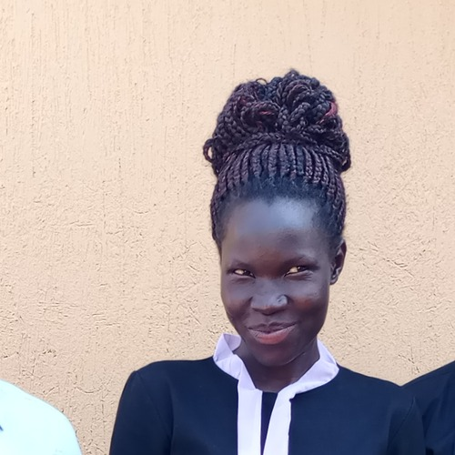
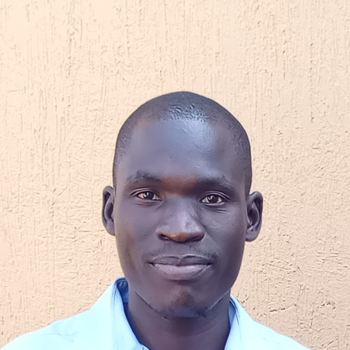

A church project built on obedience, not charity alone
Biyaya Child Development Centre (BIYAYA CDC) was established in 2019 as an official church project. We operate directly under St. Luke Church of Uganda, Adjumani.
Our Foundation
Motto: Christ-Centred Holistic Transformation (John 15:16).
Mandate: Releasing children from poverty in Jesus’ name.
Location: Biyaya Village, Biyaya Parish, Adjumani Town Council.
Approach: Partnering with families to build self-reliance.
Vision Statement
An empowered society living in obedience to God — trusting, loving and believing in Jesus as Savior and Lord, and joyfully serving Him on earth.
Mission Statement
To carry out Jesus Christ’s mission of preaching, teaching, leading and mentoring God’s people — building a loving, caring, peaceful and just community that faithfully worships the triune God.

“Greetings in the name of our Lord and Savior Jesus Christ! As the serving Parish Priest of St. Luke Church of Uganda, Adjumani, and the Constitutional Overseer of this project, I welcome you to our ministry. Biyaya CDC was birthed out of a profound spiritual call to give back to our community. We serve the most vulnerable children within Adjumani District through holistic guidance. Our constitutional layout guarantees absolute financial stewardship — every single donation is securely held at Equity Bank, and I personally hold and manage all project cheque booklets. Funds are released only after strict internal verification and committee approval, and our accounts face annual external audits by the Madi and West Nile Diocese. We invite you to partner with us as we mentor, educate and empower the next generation in Christ. Thank you for your obedience to God’s work.”
Our leadership structure
Matching our official administrative executive layout, so every partner knows exactly who is accountable.

Overseer
Rev. Dan
St. Luke Church of Uganda, Adjumani
Constitutional Overseer — holds cheque-booklet custody and provides spiritual oversight.

Project Director
Amaniyo Delima
Executive Leadership
Leads day-to-day operations and strategic direction across all programs.

Donor Relations
Giramia Jane
Sponsor Donor Relations & Cognitive Development
Your first point of contact for sponsorship updates and donor communication.

Homebased Program
Mureo Robinah
Program Officer
Coordinates in-home visits and family-based support for registered children.

Health & Nutrition
Tabu Innocent
Program Officer
Oversees health campaigns and nutrition support for vulnerable children.
Diocese Audit Transparency: Our books are externally audited by the Madi and West Nile Diocese at the end of every financial year, in addition to internal committee oversight by our Chairperson, Secretary and Treasurer throughout the year.
Milestones since our founding
2019
Biyaya CDC established
Founded as an official project under St. Luke Church of Uganda, Adjumani, in response to a spiritual call to serve vulnerable children.
Ongoing
Constitutional governance formalised
Executive committee structure, cheque-booklet controls and Equity Bank custody put in place under Church oversight.
Annually
External diocesan audit
Books of account are reviewed and finalised by the Madi and West Nile Diocese at the close of every financial year.
Today
Growing our sponsorship catalog
Registering and supporting vulnerable children aged 3–17 within a 3 km radius of the Centre.
Walk with us in Adjumani District
Meet the children awaiting sponsorship, or reach out to our executive committee directly.